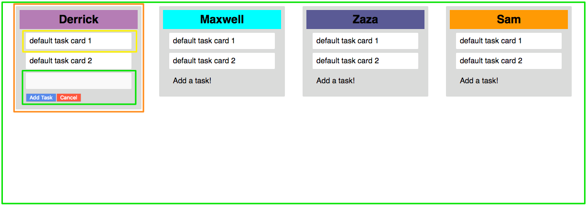

Kanban source structure¶
There are three main folders that represent three tiers architecture of the project. Picture bellow shows the files we had for implementation.
We used a big header file that include bottom menu bar also upper menu bar. Also a common footer was used for all Kanban web pages.
{kind=link}
Folder componenets has 12 subfolders.

In React, even things that are crazy simple will have several components, state, etc. Thus, when architecting a simple feature you “draw boxes around every component (and subcomponent) in the mock and give them all names.”¹ So, something like this…
{kind=link}
So green is the <Board /> component, orange the <List /> component, yellow the <TaskCard /> component and green the <CardAdder /> component. Components are supposed to follow the Single Responsibility Principle in that they should only do one thing. Additionally, figuring out the hierarchy of the components is no mystery, the components that are inside other components in the mockup are the children of those components in which they sit. In the next page you can find some code about components.